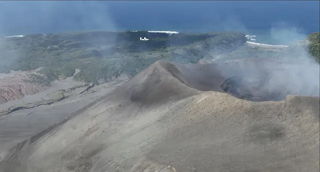
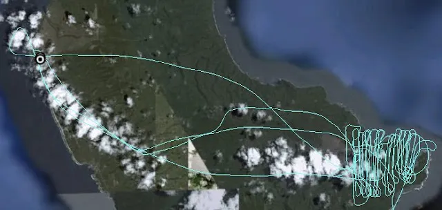
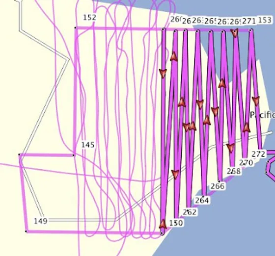

Youpie ! Après 4 jours de vols intensifs, à éviter les bombes volcaniques et à retenir son souffle (et à croiser les doigts pour le moteur) à chaque traversée du panache de gaz, on a réussi ! Les milliers de photographies aériennes sont dans la boîte, on va maintenant pouvoir les traiter pour reconstituer un modèle 3d (autrement dit en langage scientifique, un DEM, Digitalized Elevation Model) de l'intégralité du dôme. Vous voyez le minuscule point blanc au dessus du volcan ? Oui oui, c'est bien nous :D

Et en dessous, notre tracé ! Alors oui il n'est pas aussi droit que la planification faite a l'ordinateur (en rose), mais n'oublions pas que nous n'avons pas de pilote automatique ! En gros, nous avons les mêmes outils de navigation que Saint Exupéry en son temps ;)

